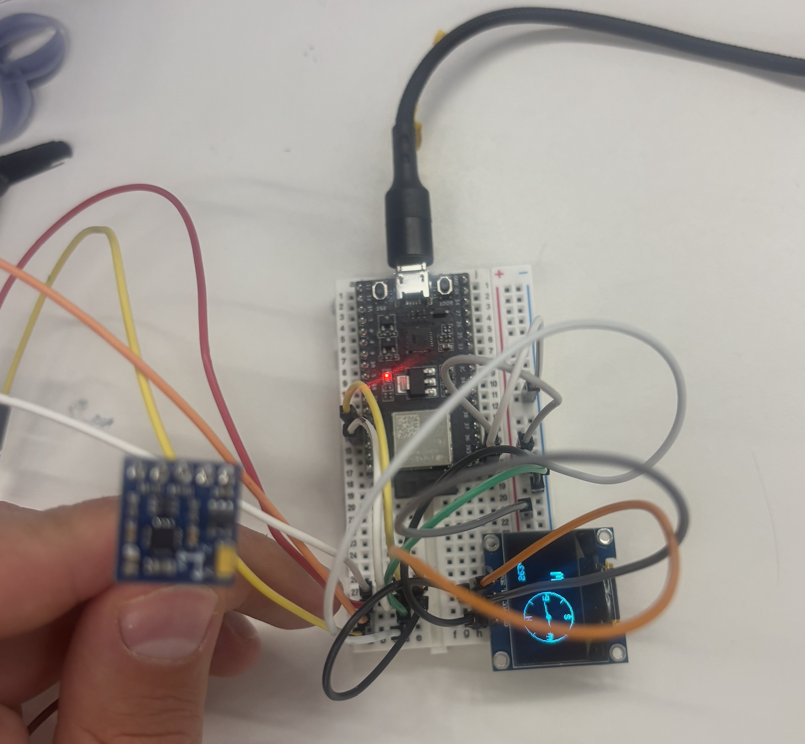

This project implements a digital compass using a GY-271 magnetometer module (QMC5883L chip) connected to an ESP32-DevKitM-1 microcontroller. The heading is displayed graphically on a GME12864 OLED display with a rotating arrow and cardinal direction. A web-based calibration plotter captures raw sensor data over Serial and displays live charts to characterise and correct magnetic distortion.
Components: ESP32-DevKitM-1, GY-271 (QMC5883L) magnetometer, GME12864 OLED display (SSD1306 driver). Wiring: both devices share the I²C bus on pin 22 (SDA) and pin 21 (SCL), powered from 3V3 and GND. The GY-271 has I²C address 0x0D, the display 0x3C.
Wiring diagram.
The firmware is structured as a single C++ class CompassDisplay encapsulating both sensor and display logic. A State enum drives a state machine between CALIBRATING and RUNNING modes. All timing uses millis(), with no delay() calls anywhere. The ESP32 streams JSON over Serial during both phases for live web plotting.
A companion web plotter (compass_plotter.html) connects to the ESP32 over WebSerial and renders live scatter and heading charts in the browser.
The QMC5883L outputs raw magnetic field values in X and Y. Without calibration, nearby electronics on the PCB introduce a hard-iron offset: a constant magnetic bias that shifts all readings away from the true origin. When raw X/Y points are plotted during a full 360° rotation, they form an ellipse displaced from (0,0) rather than a circle centred at the origin.
The calibration routine records the minimum and maximum values on each axis over a 15-second rotation window. The centre of the ellipse is computed as xOffset = (xMax + xMin) / 2, yOffset = (yMax + yMin) / 2. Scale factors xScale and yScale normalise the two axes to equal range, correcting the ellipse back toward a circle.
Calibration sequence: rotate the sensor in all directions while the plotter captures raw X/Y scatter.
The heading is computed as heading = atan2(y, x), converting corrected X/Y field components to an angle in degrees. This is a non-linear relationship: equal steps in physical rotation do not produce equal steps in the raw X or Y signal individually, because each axis follows a sinusoidal response to rotation. The atan2 function recombines them into a heading that is approximately linear with rotation when the sensor is well-calibrated, but exhibits a discontinuous jump from 359° back to 0° as the sensor completes a full revolution. This wraparound is visible in the heading-over-time chart as a vertical drop and is expected behaviour, not a sensor error.

Assembly: ESP32-DevKitM-1, GY-271 magnetometer, and OLED display on a shared I2C bus.
Walkthrough: calibration phase followed by live compass display.
The second assignment for this week was a group project. I worked on a capacitive sensor with Aadit Saluja, Vlad, and Darwin. We also built the Oblometer together in class as part of the same session.